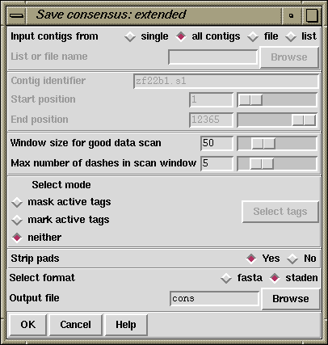

This consensus type (which is available from the gap4 File menu) is useful for those who are too impatient to complete their sequence and want to compare it, in its fullest extent, to other data. The sequence produced therefore includes hidden data from the ends of the contigs.
The currently active consensus algorithm is selected from the "Consensus algorithm" dialogue in the main gap4 Options menu (see section Consensus Algorithm).
Contigs can be selected from a file of file names or a list. In addition tagged regions can be masked or marked (see section Active tags and masking), and output can be in fasta or staden formats.

The contigs for which to calculate a consensus can be a particular "single" contig, "all contigs", or a subset of contigs whose names are stored in a "file" or a "list". If a file or list is selected the browse button will be activated, and if it is clicked, an appropriate browser will be invoked. If the user selects "single" then the dialogue for choosing the contig and the section to process becomes active.
Where possible the contigs are extended using the poor quality data from the readings near their ends. To ensure that this additional data is not too poor the program uses the following algorithm. It slides a window of size "Window size for good data scan" along the hidden data for each reading and stops if it finds a window that contains more than "Max dashes in scan window" non-ACGT characters. The data that extends the contig the furthest is added to its consensus sequence.
If the user selects either "mask active tags" or "mark active tags" the "Select tags" button is activated, and if it is clicked, a dialogue panel appears to enable the user to select which tag types should be used in these processes. If "mask" is selected all segments covered by the tag types chosen will not be written as ACGT but as defi symbols. If "mark" is selected the tagged segments will be written in lowercase characters. Masking is useful for producing a sequence to screen against other sequences: only the unmasked segments will produce hits.
The "strip pads" option will remove pads ("*"s) from the consensus sequence.
The routine can write its consensus sequence in "fasta" and "staden" formats. The output file can be chosen with the aid of a file browser.